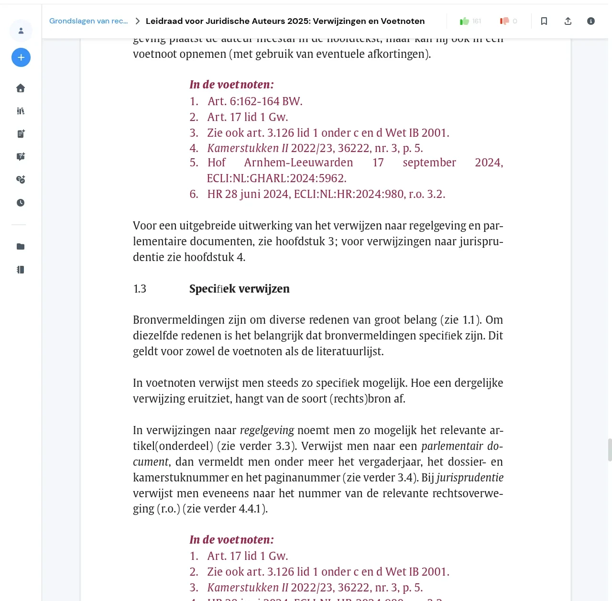

Xoá lớp làm mờ bản cao cấp và các khối mời nâng cấp khỏi tài liệu Studocu, rồi tải toàn bộ tài liệu thành một file PDF.
Tiện ích trình duyệt cho studocu.com, studeersnel.nl, studocu.vn và studocu.id. Chrome, Brave, Edge và Firefox 142 trở lên. Không cần tài khoản, không máy chủ, không thu thập dữ liệu.
Tải bản mới nhất Mã nguồn trên GitHub
Mỗi bản phát hành kèm một file .zip dùng cho Chrome, Brave, Edge và
Firefox. Tiện ích không qua cửa hàng nên được nạp từ file;
các bước cài đặt chỉ mất khoảng một phút.

Tính năng
Tài liệu, không kèm những khối mời nâng cấp
- Lớp mờ biến mất.
- Mọi trang mà Studocu thực sự gửi nội dung về trình duyệt đều được hiển thị rõ, và giữ rõ khi trình xem render lại. Đây là tính năng luôn bật.
- Các khối mời nâng cấp cũng biến mất.
- Banner bản cao cấp, huy hiệu, nút Nâng cấp và hộp thoại che tài liệu bị gỡ trước khi kịp hiện. Quảng cáo và thanh công cụ "Đặt câu hỏi" của AI cũng được ẩn.
- Tải thành một file PDF.
- Nút Tải xuống phía trên các trang chụp lại toàn bộ trang, cả chữ lẫn hình, rồi in cả tài liệu qua chức năng Lưu dưới dạng PDF của trình duyệt. Mỗi tờ giấy có kích thước đúng bằng trang nó chứa, nên tài liệu trộn khổ dọc và ngang vẫn ra đúng như ban đầu.
- Mọi trang được tải khi mở tài liệu.
- Trình xem thường chỉ render một trang khi bạn cuộn qua nó. Tiện ích đi qua tài liệu một lượt để mọi trang được render và sẵn sàng, rồi đưa bạn về đúng vị trí cũ.
- Mỗi tính năng là một công tắc.
- Có thể tắt riêng nút Tải xuống, tự tải trang, ẩn quảng cáo, thanh công cụ AI và thay logo trong popup trên thanh công cụ. Cài đặt được lưu trong bộ nhớ đồng bộ của trình duyệt và áp dụng ở lần mở tài liệu tiếp theo.
Điều không thể làm
Trang mà trang web không gửi thì không thể xoá mờ
Studocu dựng một PDF gốc thành hai lớp cho mỗi trang: một ảnh nền chứa hình vẽ (đường kẻ, viền bảng, ô màu) và một lớp chữ HTML đặt đè lên. Hai lớp được cấp quyền riêng, và với tài liệu trả phí, Studocu không gửi lớp chữ của các trang bị khoá về trình duyệt. Không tiện ích nào có thể xoá làm mờ những trang đó, vì nội dung chữ không hề có trên máy bạn.
Những trang như vậy vẫn giữ bản xem trước bị làm mờ của Studocu và được gắn nhãn "Trang N bị khoá bản cao cấp" trong trình xem và trong bản tải xuống, để bạn phân biệt với trang bị lỗi. Mọi trang mà Studocu có gửi chữ đều được mở đầy đủ, và console của trình duyệt liệt kê chính xác những trang không thể khôi phục.
Cài đặt
Cài từ file ZIP, cho Chrome và Firefox
Tải file zip từ bản phát hành mới nhất. Số phiên bản nằm trong tên file. Hãy giải nén ra một thư mục cố định; đừng nạp trực tiếp từ trong file zip.
Chrome, Brave, Edge
- Tải
docusave-vX.Y.Z.zipvà giải nén vào một thư mục bạn muốn giữ. - Mở
chrome://extensions(Brave:brave://extensions, Edge:edge://extensions). - Bật Chế độ dành cho nhà phát triển ở góc trên bên phải.
- Bấm Tải tiện ích chưa đóng gói và chọn thư mục vừa giải nén, thư mục có file
manifest.json. - Ghim DocuSave lên thanh công cụ để mở popup cài đặt nhanh hơn.
Để cập nhật, giải nén file zip mới đè lên thư mục cũ rồi bấm biểu tượng tải lại trên thẻ tiện ích. Sau đó tải lại trang Studocu đang mở.
Firefox
- Tải
docusave-vX.Y.Z.zipvà giải nén vào một thư mục bạn muốn giữ. - Mở
about:debugging#/runtime/this-firefox. - Bấm Load Temporary Add-on... và chọn file
manifest.jsontrong thư mục vừa giải nén. - Mở một tài liệu Studocu, bấm biểu tượng mảnh ghép trên thanh công cụ, mở phần cài đặt của DocuSave và chọn Always Allow on studocu.com (và trên studeersnel.nl, studocu.vn hoặc studocu.id nếu bạn dùng).
Bản phát hành không kèm .xpi, nên Firefox chỉ nạp tạm và tiện ích sẽ
mất khi đóng trình duyệt. Nếu cần cài lâu dài, hãy ký file zip qua Mozilla
Add-ons hoặc dùng Firefox Developer Edition/Nightly với
xpinstall.signatures.required đặt thành false.
Tải tài liệu
Đợi tài liệu tải xong, rồi tải chỉ với ba bước
Quan trọng: hãy đợi Studocu tải xong tài liệu — các trang đã hiện nội dung và quá trình tự tải trang đã chạy xong — rồi mới bấm Tải xuống. Bấm quá sớm có thể làm bản xem trước thiếu trang hoặc thiếu chữ. Nếu lỡ bấm sớm, hãy đóng bản xem trước, tải lại trang và thử lại.
- Mở tài liệu, đợi các trang hiện ra, rồi bấm nút Tải xuống màu xanh phía trên các trang.
- Bản xem trước mở ra ngay trong tab hiện tại và tự chụp từng trang. Bạn sẽ thấy "Đang chụp trang X / N" rồi "Đang nhúng ảnh X / N". Hãy giữ tab ở phía trước: trình duyệt sẽ làm chậm tab nền và quá trình chụp có thể bị treo.
- Khi xong, bấm In / Lưu PDF (hoặc Ctrl+P / Cmd+P) và chọn "Lưu dưới dạng PDF" làm đích.
Nhấn Esc hoặc bấm Đóng để thoát bản xem trước.
Cách hoạt động
Hai lớp trên mỗi trang, tải từ CDN có URL ký sẵn
Trình xem của Studocu là đầu ra của pdf2htmlEX được bọc trong một virtual scroller của React. Mỗi trang gồm một ảnh nền và một lớp chữ HTML định vị, cả hai được tải từ CDN bằng URL có chữ ký nằm sẵn trong trang. Tiện ích đọc các tham số đã ký, xác định những trang máy chủ thực sự cho phép tải, lấy asset độ phân giải đầy đủ cho những trang đó và gắn nhãn cho phần còn lại. Phần làm mờ là một bộ lọc CSS; tiện ích gỡ nó và giữ nó bị gỡ khi React render lại.
Tài liệu kiến trúc mô tả bố cục CDN, mô hình cấp quyền và cách phát hiện trang bị khoá bản cao cấp, dành cho ai muốn kiểm tra những tuyên bố trên trước khi tin tưởng.
Tự build từ mã nguồn
File thuần, một lệnh để đóng gói
Cần Node 20 trở lên. Tiện ích không có dependency lúc chạy và không dùng bundler: các content script được nạp theo thứ tự trong manifest và dùng chung một namespace.
git clone https://github.com/thangvt-food/docusave.git
cd docusave
npm install
npm test
npm run build
Lệnh trên chạy unit test và fixture test rồi đóng gói src/ vào
dist/. Bạn có thể nạp thư mục src/ làm tiện ích chưa
đóng gói để chạy bản đang sửa, hoặc để web-ext mở trình duyệt với
npm run start:firefox hay npm run start:chromium.
CONTRIBUTING
trình bày cấu trúc dự án và quy trình phát hành.
Khi có vấn đề
Studocu đổi tên class; cách sửa thường là thêm selector
Trang web thỉnh thoảng đổi tên class CSS. Khi banner hoặc hiệu ứng làm mờ quay
lại sau một đợt cập nhật của Studocu, cách sửa gần như luôn là thêm một
selector mới, và pull request cho những trường hợp này luôn được hoan nghênh.
Với lỗi khác, hãy
mở issue:
mẫu báo lỗi sẽ hỏi trình duyệt, phiên bản tiện ích, loại tài liệu và các dòng
bắt đầu bằng DocuSave: trong console. Những dòng đó cho biết
chính xác trang nào đã khôi phục được và trang nào không.